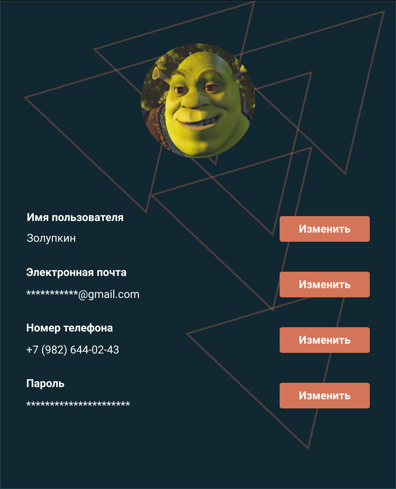

<router-outlet></router-outlet>
<app-modal [isModalVisible]="modalCard">
  
</app-modal>
<button
  style="width: 150px; height: 100px; background-color: red; color: white"
  (click)="modalCard = true"
>
  Открыть модальное окно
</button>
